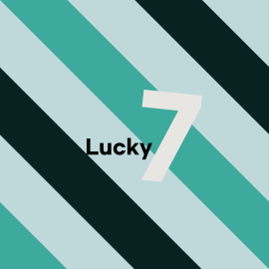

이떄까지 가위바위봇과 존팔봇은, 서로 협력하고, 선의의 경쟁을 하며 살아 왔습니다. 하지만 둘이서 같은 서버에 있으면 큰 문제가 발생합니다.
그 이유는, 서로 명령어가 같은 부분이 있어서 충돌한다는거죠. 멘션 알림이 2번 오거나, 필터링이 2번 되니 에러가 발생한다거나.. 그래서 저와
존팔님은 계획했습니다. 기능을 전부 합치자! 7봇은 정말 뛰어난 성능을 보여주게 계획하고 있습니다. 내일도, 그 다음날도!
7봇은 계속 업데이트 되고, 좋아집니다!
7봇의 프로필 사진의 의미

이 프로필 사진은, Lucky 7을 담고 있는 프로필 사진입니다. 이 봇을 사용하면 당신의 생활이 편리해지고 럭키해질수 있습니다!:)